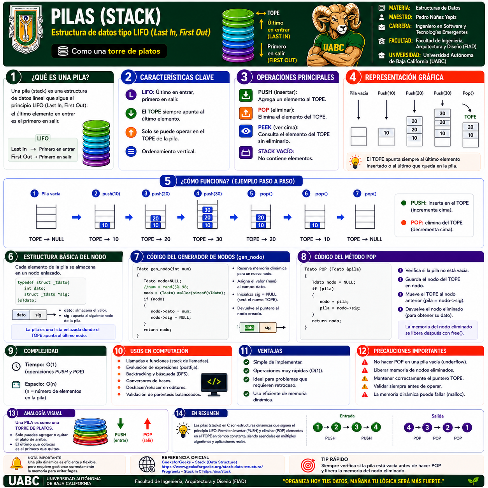
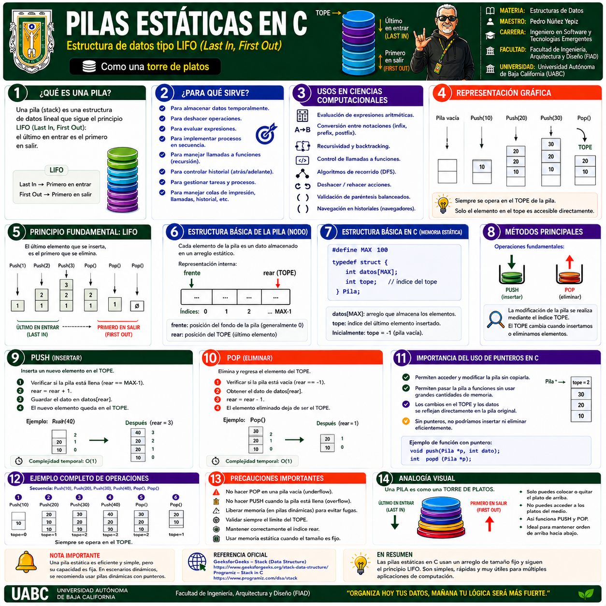
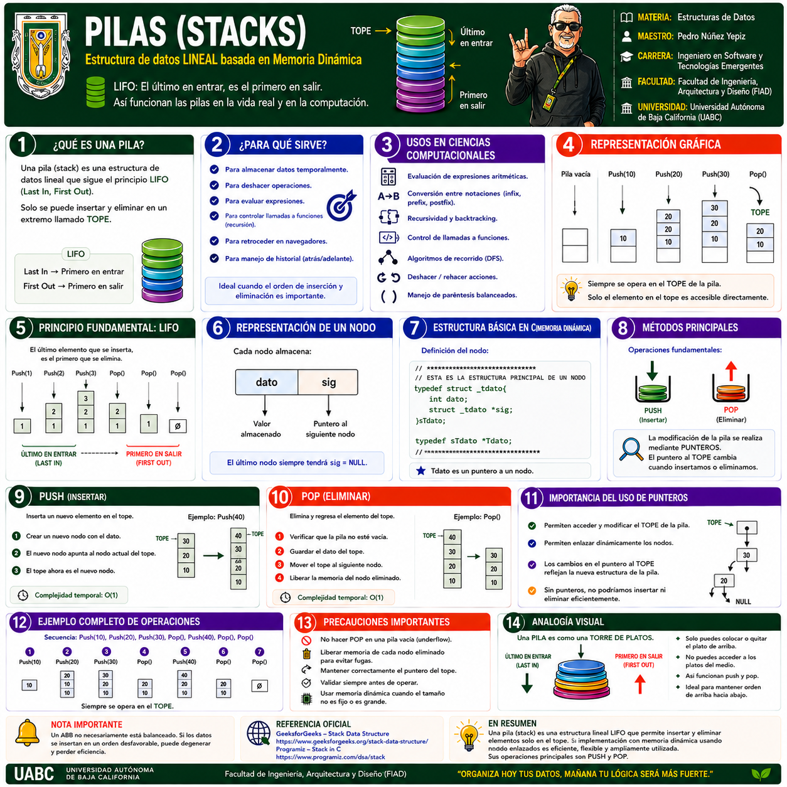
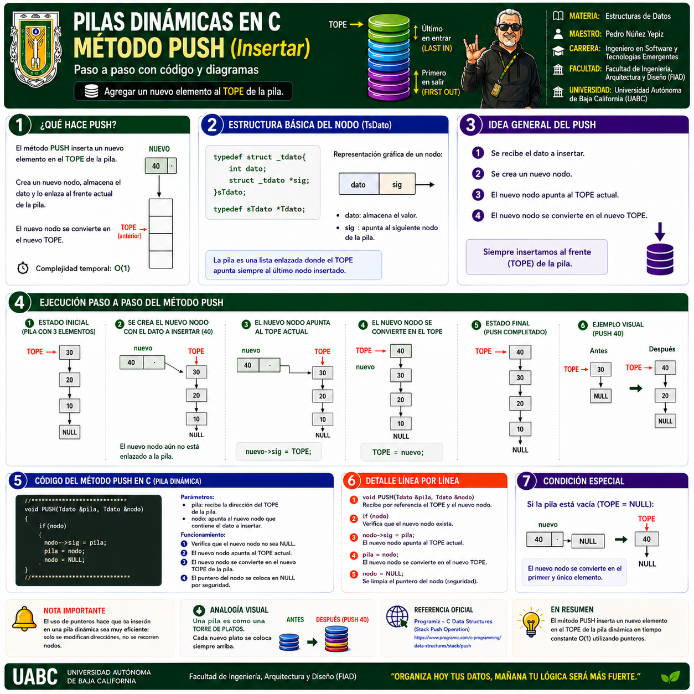
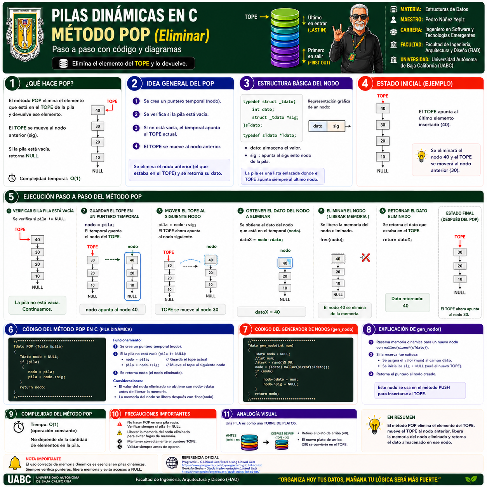

1 · Pilas (Stack) · Conceptos fundamentales
Principio LIFO, operaciones PUSH, POP y PEEK, representación gráfica, complejidad, usos y analogía de la torre de platos.
Selecciona cualquier infografía para abrirla a pantalla completa. En la vista ampliada puedes usar Zoom +, Zoom −, las flechas anterior/siguiente o la tecla Esc para cerrar.

Principio LIFO, operaciones PUSH, POP y PEEK, representación gráfica, complejidad, usos y analogía de la torre de platos.

Implementación mediante arreglo, control del TOPE, PUSH, POP, límites de capacidad y principales precauciones.

Nodos enlazados, puntero TOPE, memoria dinámica, operaciones fundamentales y ventajas frente a una pila de tamaño fijo.

Explicación paso a paso de cómo crear un nodo, enlazarlo con el TOPE actual y convertirlo en el nuevo TOPE.

Movimiento del TOPE, recuperación del dato, liberación de memoria y recorrido completo del proceso de eliminación.